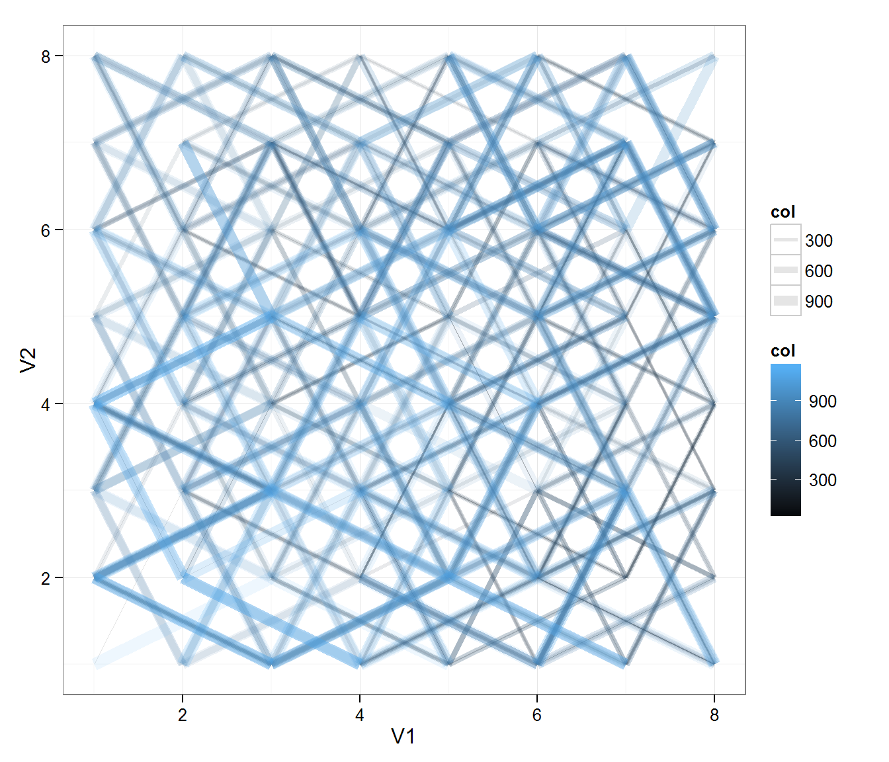
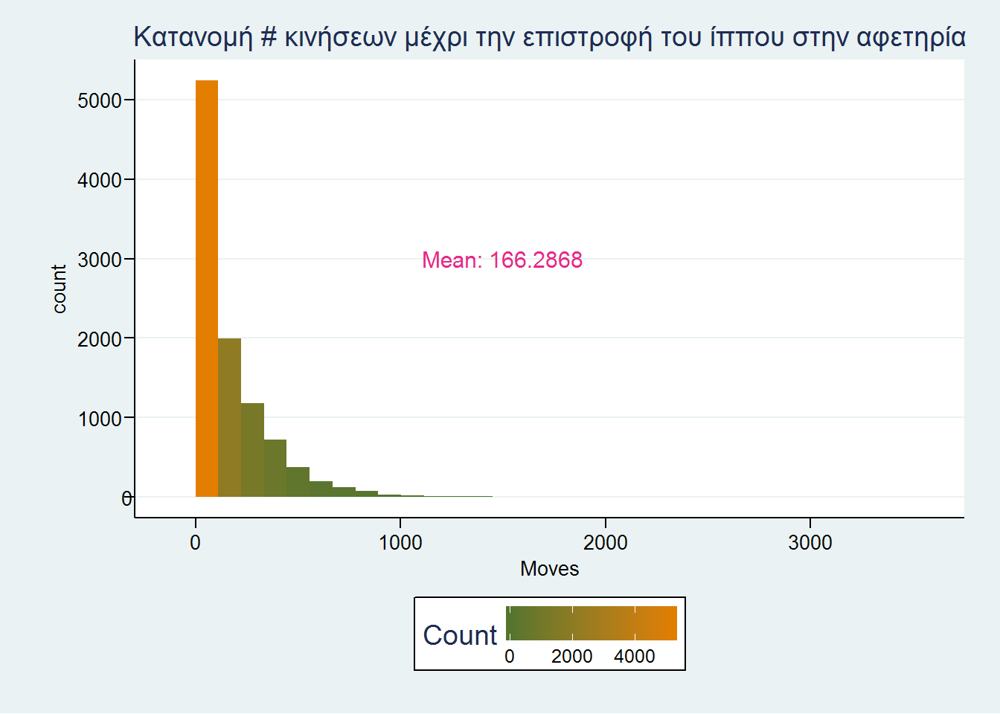
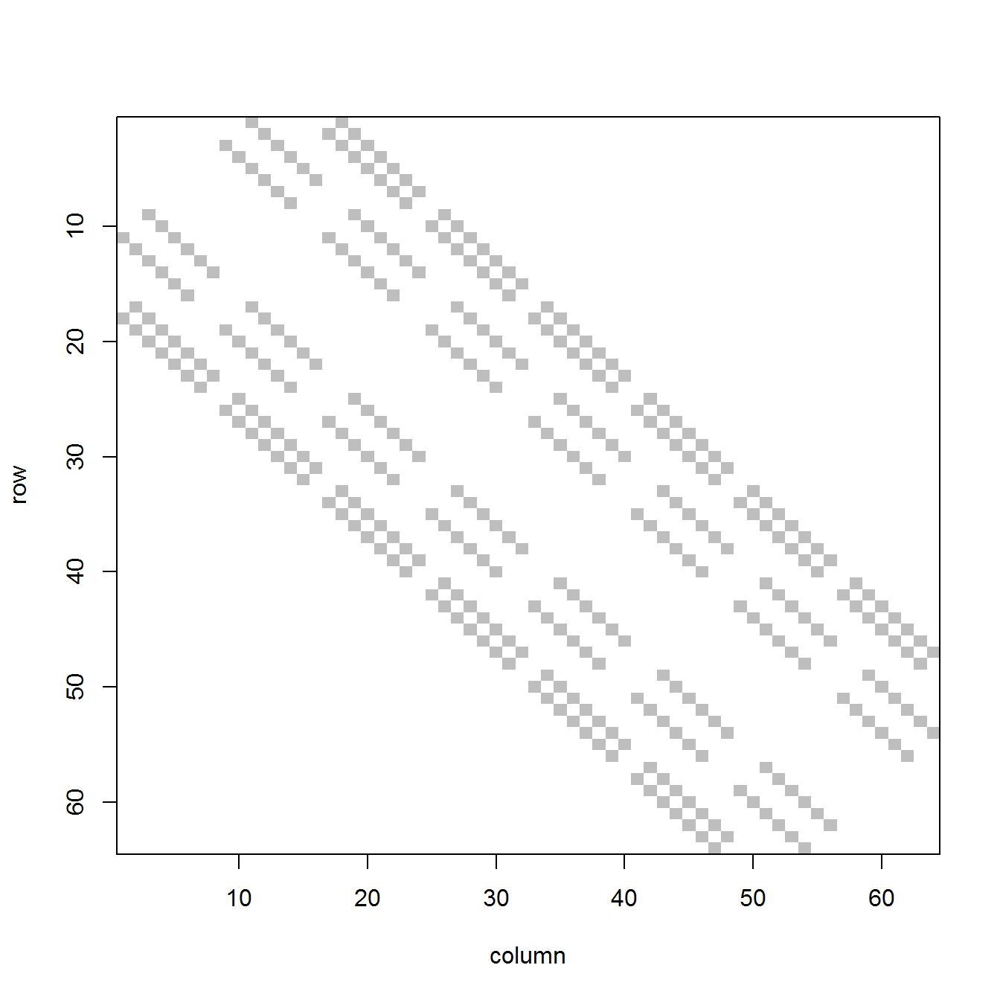

Τοποθετήστε έναν ίππο σε μια γωνία μιας κατά τα άλλα άδειας σκακιέρας. Μετακινήστε τον ίππο τυχαία, επιλέγοντας σε κάθε κίνηση, μία εκ των δυνατών θέσεων που μπορεί να μεταβεί (με ίση πιθανότητα). Ποιος είναι ο μέσος αριθμός των κινήσεων μέχρι ο ίππος να επιστρέψει στο αρχικό τετράγωνο;
H πιο απλή λύση είναι η προσομοίωση, που όμως έχει μειωμένη ακρίβεια (αλλά είναι πολύ καλύτερη από το τίποτα). Ένας τρόπος αντιμετώπισης φαίνεται παρακάτω.
suppressPackageStartupMessages(library(dplyr))
suppressPackageStartupMessages(library(ggplot2))
suppressPackageStartupMessages(library(ggthemes))
suppressPackageStartupMessages(library(SparseM))
suppressPackageStartupMessages(library(matlab))
dm <- matrix(c(rep(c(2,1,-2,-1),each=2),rep(c(-1,1,-2,2),2)),ncol=2)
move <- function(cur.pos){
tot.pos <- matrix(rep(cur.pos,each=8),ncol=2) + dm
tot.pos <- tot.pos[tot.pos[,1] %in% 1:8 & tot.pos[,2] %in% 1:8,]
tot.pos[sample.int(nrow(tot.pos),1),]
}
my.samples <- list()
n.steps <- function(){
counter <- 0
steps <- matrix(c(1,1),ncol=2)
pos <- c(1,1)
repeat {
counter <- counter + 1
pos <- move(pos)
steps <- rbind(steps,pos)
if (identical(pos,c(1,1))){
my.samples <<- c(my.samples,list(steps))
return(counter)
break
}
}
}
n<-10000
res<-replicate(n,n.steps())
mea <- mean(res)Από τα παραπάνω προκύπτει μέση τιμή ίση μέ: 166.2868.
res.1000 <- my.samples[[which(lapply(my.samples,nrow)>1000)[1]]]
df <- as.data.frame(res.1000)
rownames(df)<- 1:nrow(res.1000)
df$col <- 1:nrow(res.1000)
p <- ggplot(df, aes(V1, V2))
p + geom_path(aes(colour = col,size = col),alpha=.1) +
scale_size(range = c(.1, 3.5)) +
scale_colour_gradient(low="black") +
theme_bw()
Όσο πιο θαλασσιά και παχιά η γραμμή τόσο σε μεταγενέστερο στάδιο έγινε η κίνηση. Στην περίπτωση αυτή χρειάστηκαν 1425 κινήσεις για να επιστρέψει ο ίππος στο τετράγωνο (1,1). Τα τετράγωνα παριστάνονται ως σημεία στο επίπεδο με συντεταγμένες από (1,1) έως (8,8)
m <- ggplot(data.frame(Moves=res), aes(x=Moves))
m + geom_histogram(aes(fill = ..count..)) +
scale_fill_gradient("Count", low = "#55752f", high = "#e37e00", breaks = c(0,2000,4000),labels=c("0","2000","4000")) +
annotate("text", label = paste("Mean:",mea), x = 1500, y = .3*n, size = 4, colour = "#E7298A") +
theme_stata() +
ggtitle("Κατανομή # κινήσεων μέχρι την επιστροφή του ίππου στην αφετηρία") +
theme(legend.position = "bottom",
axis.text.y=element_text(angle=0,hjust=1.3),
axis.title.x=element_text(vjust=0.3),
legend.text = element_text(size = rel(.85))
)
Ο βέλτιστος όμως τρόπος λύσης (με χρήση υπολογιστή) είναι ο υπολογισμός της \(P(n)\), (πιθανότητα επιστροφής μετά από \(n\) κινήσεις), ο οποίος εκτός από ακριβής είναι και πολύ ταχύτερος από την προσομοίωση. Βέβαια δεν μπορεί να υπολογιστεί το \(\sum_n n \cdot P(n)\), γιατί το άθροισμα έχει άπειρους όρους. Ορίζοντας τον \(64 \times 64\) transition probability matrix και με λίγο κώδικα, μπορεί όμως να εκτιμηθεί έως τον επιθυμητό βαθμό ακρίβειας.
# create the transition matrix
x <- c(1*8+2*1,
1*8-2*1,
-1*8+2*1,
-1*8-2*1,
2*8+1*1,
2*8-1*1,
-2*8+1*1,
-2*8-1*1
)
tra.m <- matrix(rep(0,64*64),nrow=64)
for (i in 1:64){
init.pos <- i+x
# remove negative and >64
init.pos <- init.pos[init.pos > 0 & init.pos <= 64]
if (i %in% c(1,1+1:7*8)){
init.pos <- init.pos[!init.pos %in% c(7,7+1:7*8) & !init.pos %in% c(8,8+1:7*8)]
}
if (i %in% c(2,2+1:7*8)){
init.pos <- init.pos[!init.pos %in% c(8,8+1:7*8)]
}
if (i %in% c(7,7+1:7*8)){
init.pos <- init.pos[!init.pos %in% c(1,1+1:7*8)]
}
if (i %in% c(8,8+1:7*8)){
init.pos <- init.pos[!init.pos %in% c(1,1+1:7*8) & !init.pos %in% c(2,2+1:7*8)]
}
n <- length(init.pos)
tra.m[i,init.pos] <- 1/n
}
A.csr <- as.matrix.csr(tra.m)
image(A.csr)
Στο πιο πάνω γράφημα φαίνεται η δομή του πίνακα μετάβασης, με τις θέσεις των μη μηδενικών στοιχείων.
Με βάση θεώρημα που λέει ότι η πιθανότητα η αλυσίδα να βρίσκεται στη θέση \(i\) μετά από \(n\) βήματα προκύπτει από τη \(n\)-οστή δύναμη του transition matrix, έχουμε:
n=0 # iteration count
s=zeros(64,1)
s[1]=1 # s(1)=Prob(@home) at iteration n
w=0 # running sum of n*P(n)
while(1){
n=n+1
s=tra.m %*% s
#print(s[1])
w=w+s[1]*n
s[1]=0
if (max(s)<1e-10)
break
}
# Άλλος τρόπος
# pr <- vector()
# m <- tra.m
# n <- 10000
# for (j in seq(2,n)){
# if(j == 2) {
# m <- m %*% tra.m
# } else {
# m <- m %*% tra.m
# }
# pr <- c(pr,m[1,1])
# m[1,1] <- 0
# }
# sum(pr * seq(2,n))Από τα παραπάνω προκύπτει η ακριβής μέση τιμή, που είναι ίση μέ: 168.
Η βέλτιστη λύση βέβαια είναι η ακριβής μαθηματική επίλυση, η οποία αντιμετωπίζει το πρόβλημα ως τυχαίο περίπατο σε συνεκτικό γράφο. Οι κορυφές είναι τα τετράγωνα της σκακιέρας και οι ακμές αντιπροσωπεύουν τις δυνατές μετακινήσεις. Η γενική λύση είναι \(2Ν/k\), όπου \(Ν\) ο αριθμός των ακμών του γράφου και \(k\) o αριθμός των ακμών που συνδέονται με το σημείο εκκίνησης. Στην περίπτωσή μας \(Ν=168\) ( length(tra.m[tra.m>0])/2 ) και \(k=2\).
Για πλήρη επεξήγηση της μαθηματικής επίλυσης, δείτε το Κεφ. 3, σελ 9 εδώ: http://www.stat.berkeley.edu/~aldous/RWG/book.html
O Leonhard Euler (1707-1783) είχε βρει ένα τρόπο μετακίνησης του ίππου στο σκάκι, έτσι ώστε να περάσει από όλα τα τετράγωνα μία και μόνο φορά. Μπορείτε να βρείτε μια τέτοια διαδοχή κινήσεων, ξεκινώντας από το τετράγωνο Α1;
Παρακάτω δίνεται ένας τρόπος εύρεσης μιας διαδοχής κινήσεων του ίππου, ώστε να περάσει από όλα τα τετράγωνα της σκακιέρας μια και μόνο φορά, με τη βοήθεια μιας αναδρομικής συνάρτησης:
source_node = 1
currentroute = vector()
currentroute = c(currentroute,source_node)
res.list <- list()
move_to_next <- function(newnode,prox_table,currentroute){
if (length(currentroute) == 64) {
return(paste("FINISHED.",currentroute))
} else {
newnode_proximities = which(prox_table[newnode,]>0)
num_loops = length(which(prox_table[newnode,]>0))
# IF THERE IS NOT ALREADY A BLOCKED SQUARE proceed to for loop
free.sq <- setdiff(1:64,currentroute)
free.table <- prox_table[free.sq,free.sq]
#colnames(free.table) <- free.sq
# add current square to starting squares
free.table <- rbind(free.table,prox_table[newnode,free.sq])
#rownames(free.table) <- c(free.sq,newnode)
if (all(colSums(free.table)>0)) {
for (i in 1:num_loops){
source_node = newnode_proximities[i]
if (!(source_node %in% currentroute) & (length(res.list)==0)){
myroute <- c(currentroute,source_node)
if (length(myroute)==64){
res.list[[length(res.list)+1]] <<- myroute #;print(length(res.list))
} else {move_to_next(source_node,prox_table,myroute)}
#if (length(myroute)>62){print(myroute)}
}
}
}
}
}
move_to_next(source_node,tra.m,currentroute)
# Convert results to chess coordinates
chess.coord <- function(x){
num <- 1 + (x-1) %/% 8
let <- ifelse(x%%8 == 0,LETTERS[8],LETTERS[x%%8])
return(paste0(let,num))
}
#sapply(res.list[[1]],chess.coord)Η πρώτη λύση που υπολογίστηκε από τον αλγόριθμο είναι η : A1, C2, E1, G2, E3, D1, B2, D3, C1, A2, C3, B1, D2, F1, H2, F3, G1, E2, G3, H1, F2, H3, F4, D5, B4, A6, C5, B3, D4, B5, A3, C4, A5, B7, D6, E4, G5, H7, F8, E6, D8, F7, H8, G6, H4, F5, H6, G4, E5, D7, B8, C6, A7, C8, E7, G8, F6, H5, G7, E8, C7, A8, B6, A4.
Ο λόγος για τον οποίο ΔΕΝ θα πρέπει να περιμένει κανείς να ολοκληρωθεί η συνάρτηση που υπολογίζει τις διαδρομές, περιγράφεται αναλυτικά εδώ: http://www.josiahland.com/archives/781